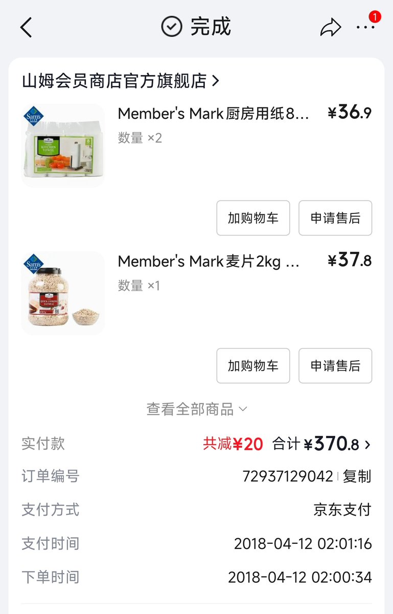
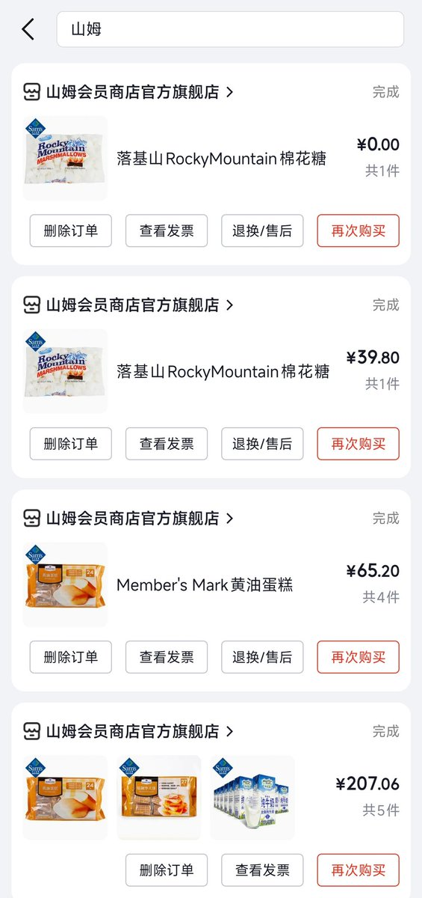

山田リョウ⛩️
@Yamada_Ryoooo
@0xFxF 卓越会员可以开联名卡返点4%


𝟎𝐱𝐅 🏴☠️
@0xFxF
我从来没有去过山姆超市，但我有它的会员卡。
山姆会员店其实十年前就上线了京东，
翻出来我 2018 年还办过山姆会员卡，和线下一样是 260 会员费，但少了线下逛超市的体验。😂
毕竟十年前山姆超市在全国只有 15 家店，全在大城市。
会员卡后来也不续费了，因为根本回不了本🥹 https://t.co/glmejfvoSd